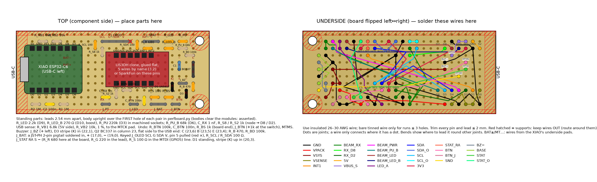
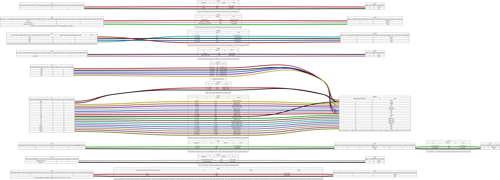
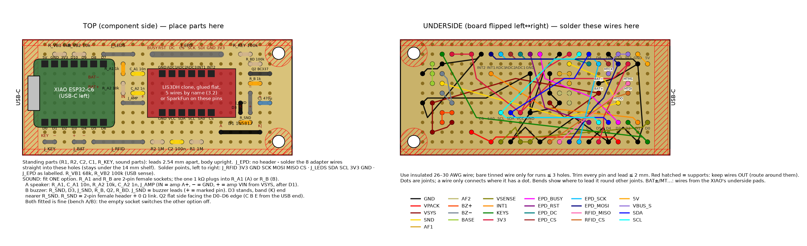
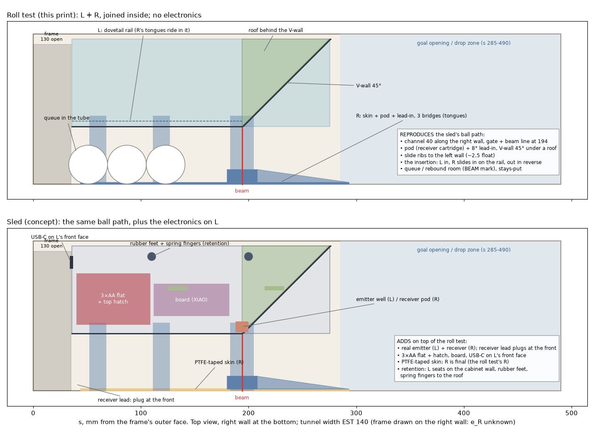
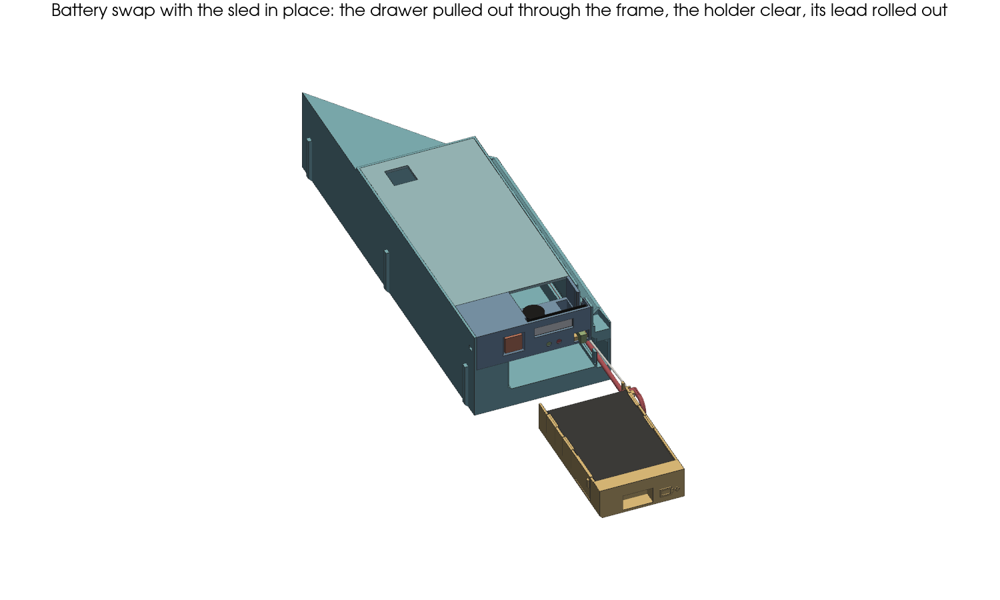
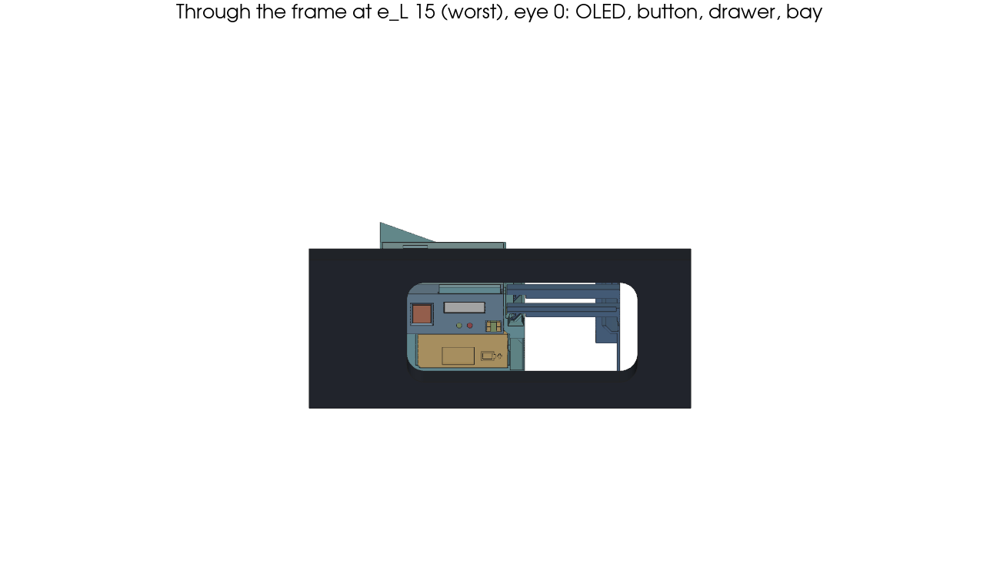
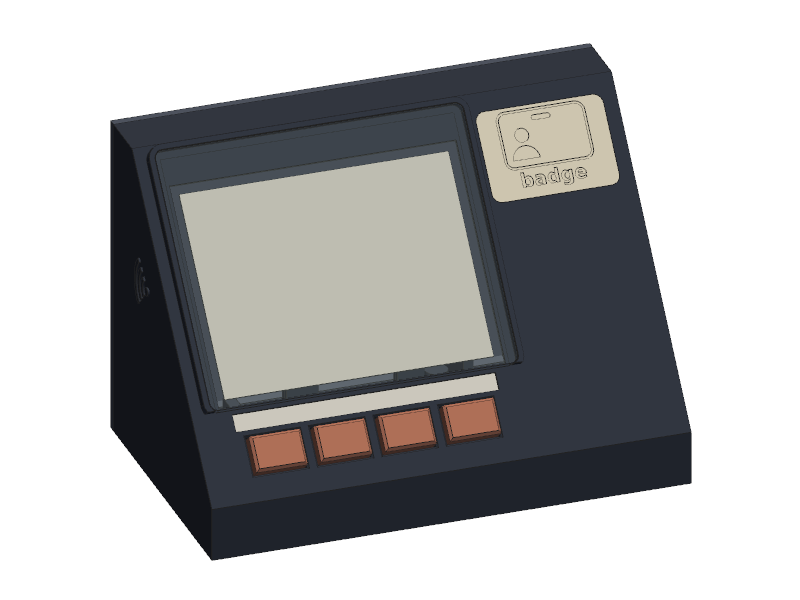
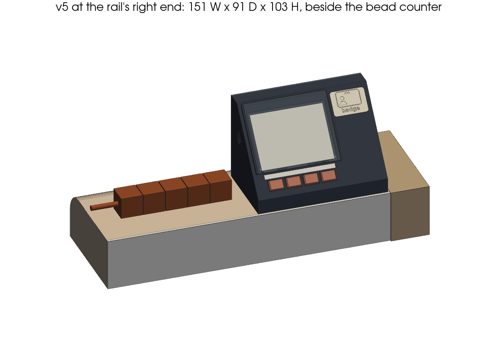
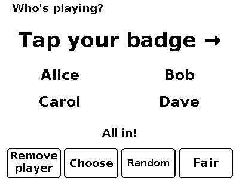
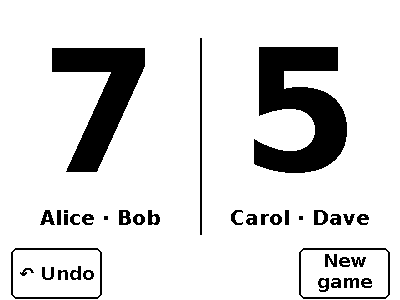

Foosball table hardware: an introduction
A quick, honest tour for a hardware person joining the project: what we're building, why, which parts it uses, how it all goes together, and where we'd value a second pair of eyes.
team/INTERFACES.md, each with an
owner. This page quotes them as of 2026-10-18 and marks them "§0"; if they differ, §0 wins. EST means
not yet measured.1. What and why
We play foosball a lot at the office (Garlando G-5000 tables). Today we count goals by hand with the bead counter, then type the result into our rating app (the MMR project, the repo this folder lives in), usually from memory. We'd like the table to count for us: players tap a badge, the table makes the teams, counts the goals and saves the result to MMR on its own.
Honest reason: because we can. It should be cheap, robust, and need no babysitting.
2. The system at a glance
Per table there are three battery-powered devices, all based on the Seeed XIAO ESP32-C6:
One in each goal's ball tunnel, on a 3D-printed sled that slides in through the drawer opening. The ball rolls along a channel and breaks an IR beam → goal event to the server.
On the right end of the end rail, beside the bead counter. 4.2" black/white e-paper, 4 keys with RGB lights, a badge reader, a small speaker, and an NFC sticker for phones.
The MMR API keeps the score, owns matches, makes teams and maps devices to tables. Devices never talk to each other, only to the server.
table motion ─► LIS3DH wakes ─► XIAO ESP32-C6 ─Wi-Fi─► MMR API (REST) ─► saved to MMR
▲ │ ▲ ▲
ball breaks IR beam ─┘ └─OTLP──► Grafana │ │
(battery, alerts) │ │
scoreboard: e-paper, keys, badge reader ◄── long-poll ──────┘ └── phone: NFC → /t/<code>
Typical life of a match: someone bumps the table → the motion sensor wakes the devices → players press a key and tap their badges → the board makes the teams (choose, random or fair by MMR) → each goal is sent immediately and the board shows it within a fraction of a second, with a sound → "who scored?" → at the winning score the match is saved to MMR automatically after 10 s (time to undo the last goal) → after ~5 min with no motion and no goals everything goes back to deep sleep. Playing without badges still works: the board shows a QR code and someone claims the result in the app.
3. Ground rules (requirements)
| Rule | What it means for the hardware |
|---|---|
| Battery only, swappable AA | 3 × AA rechargeable NiMH (any low-self-discharge cells you already have). Target ≥ 1 month; estimates (EST until the bench): goal counter ≈ 1.7–3.4 months (≈ 1.2 on a table switched to a boosted beam), scoreboard ≈ 2.3–3.3 months with the speaker (§0). |
| Service from the drawer opening | Batteries and USB-C of the goal counter must be reachable from the open end where you take the balls out, never from the top, and without taking the drawer apart. |
| Power can be pulled at any instant | No corrupted storage, no lost goals: every goal is persisted before it's sent; the server dedupes resends. Clean brown-out, low-battery cutoff. |
| No device-to-device radio | Wi-Fi station only. No ESP-NOW, BLE, mDNS, broadcast, or setup hotspot. Even the two goals of one table never talk to each other. |
| Ball: 31 mm usual, 31–36 mm supported (§0); up to 3 balls waiting | Balls arrive slowly on a wooden floor that tilts towards the opening and towards the right wall. The ball path must never stall a slow ball, and the balls queuing at the opening must never sit in the beam. |
| Mounting: tape only, no drilling | Flat bases for double-sided/duct tape; no holes in the table or in bought parts. The bead counter stays on the end rail. |
| Printed on a Bambu Lab (A1/P1S/X1C) | Parts ≤ 256 mm, PETG for the final parts, no supports. PLA is fine for test prints. |
| Measure before geometry | CAD that depends on the table waits for the make-or-break measurements; unmeasured values are marked EST. |
| Observability | Devices ship logs + metrics (OpenTelemetry) so we can diagnose and get "replace batteries" alerts. |
4. Goal counter: electronics
How a goal is detected
A 940 nm IR LED (TSAL6200) shines across the 40 mm ball channel into a
TEFT4300 phototransistor, 17 mm above the floor (the centre of a 31 mm ball). The phototransistor
pulls D8 LOW while lit; a ball blocks the beam and the pull-up takes D8 HIGH. Blocked =
HIGH. DC, not modulated: the tunnel is dark and shaded, so ambient-light immunity wasn't needed,
and DC is one GPIO. The beam is only powered while the device is awake. The server picks the beam mode:
a runs the LED at ≈ 0.93 mA; a table that needs more margin can be switched to a_boost
(≈ 6.3 mA); b adds a second pull-up for daylight. A second input (D2, ADC) watches the beam's
health.
The smallest ball blocks the beam for ~9 ms (3 m/s) to ~56 ms (0.5 m/s); the phototransistor's edges with a
220 kΩ load are ≤ ~2 ms. A goal counts once the beam has been blocked ≥ min_block_ms
(default 5 ms, server-tunable), with a lockout afterwards. A photoresistor was rejected as too slow.
Parts (per goal counter)
| Part | Role | Notes |
|---|---|---|
| Seeed XIAO ESP32-C6 | MCU + Wi-Fi | ~15 µA deep sleep, no power LED, onboard buck fed from its BAT pads |
| LIS3DH breakout (SparkFun SEN-13963 for the first table; cheap clones later) | Wake on table motion | Same chip either way. The clone must have no power LED or regulator (or have them removed): bench check sleep ≤ 30 µA. Firmware finds it at I²C 0x19 or 0x18. |
| Vishay TSAL6200 | IR LED | 5 mm, 940 nm, ≈ 0.93 mA via 2.2 kΩ; + 270 Ω boost to ≈ 6.3 mA |
| Vishay TEFT4300 | Phototransistor | 3 mm, daylight filter, 220 kΩ pull-up (+ 68 kΩ in daylight mode) |
| 1N5817 Schottky | Pack → XIAO BAT pad | Stops the XIAO's onboard Li-ion charger from ever charging the AAs over USB |
| 3 × AA holder (DFRobot FIT0610) | Power | Sliding cover, tool-free |
| 470 µF electrolytic, 100 nF | Wi-Fi burst buffer, ADC filter | The AA pack's internal resistance needs the bulk cap |
| 2 × 1 MΩ | Battery voltage divider → D0 | ±60 mV typ accuracy after averaging, radio off |
| 6.8 kΩ + 10 kΩ, 5V → MTCK pad (GPIO6) → GND | USB power sense | 2.8–3.1 V on USB, 0 V on batteries: the firmware stays awake while USB is plugged in |
| MX blue (clicky) switch + printed keycap, 100 kΩ pull-up, 1 kΩ (phase 1) | Undo button | On the front face; a 1 s hold undoes this counter's own last goal within 10 s (server config), a press outside that gets a "no" knock |
| CMT-1209 magnetic buzzer, BC337-40, 1 kΩ, 100 kΩ, 1N5817 flyback (phase 1) | Buzzer | Goal chirp, undo sound and the "no" knock behind a front grille; the volume is set per table |
| 0.91" OLED, 128 × 32, white, SSD1306 I²C (phase 1) | Status display | Two-line status view, standing upright in the middle of the frame opening, shown on a short press of the undo button; panel off otherwise, so the battery barely notices |
| Red + green 3 mm LEDs, 680 Ω + 220 Ω (socketed) | Status lights | Under the OLED: green blinks = OK, red blinks = needs attention or battery low, dark = off or flat. Blinked by the low-power core, also in deep sleep |
| Wired battery lead on a JST-PH pair (J_BAT), 2 A fuse at the holder | Battery drawer lead | The drawer pulls out on its lead, with a slack loop; no sliding contacts |
| 10 kΩ (R_STRAP) D7 → GND | Wrong-board guard | Goal firmware refuses to run on a scoreboard board and vice versa |
| Perfboard 70 × 30 mm, headers, Dupont leads | Carrier | The two calibration resistors (R_LED, R_PU) sit in a socket so they can be swapped |
Pin map
| Pin | Function |
|---|---|
| D0 / GPIO0 | VBAT sense (ADC), 1 M / 1 M + 100 nF |
| D1 / GPIO1 | LIS3DH INT1 → ext1 deep-sleep wake (active-HIGH, latched) |
| D2 / GPIO2 | Beam health (ADC), through 1 kΩ from the receiver |
| D3 / GPIO21 | Receiver pull-up A (220 k); HIGH only while awake |
| D4 / D5 | I²C SDA / SCL to the LIS3DH and the OLED (0x3C) |
| D6 / GPIO16 | Receiver pull-up B (68 k), daylight mode b |
| D7 / GPIO17 | Role strap (10 kΩ to GND on the goal board) |
| D8 / GPIO19 | Beam receiver (digital, through 1 kΩ), blocked = HIGH; light-sleep wake |
| D9 / GPIO20 | Beam LED (2.2 k, ≈ 0.93 mA) |
| D10 / GPIO18 | Beam LED boost (270 Ω, ≈ 6.3 mA in all) |
| MTCK pad (GPIO6) | USB VBUS sense (6.8 k / 10 k), deep-sleep wake |
| MTMS pad (GPIO4) | Undo button, active LOW, ext1 deep-sleep wake |
| MTDO pad (GPIO7) | Buzzer: LEDC PWM → BC337, HIGH = coil on, volume = duty |
| MTDI pad (GPIO5) | Status LEDs: LOW = red, HIGH = green, floating = both off |
| BAT+ / BAT− pads | 3 × AA via 1N5817 (the fiddliest solder joints) |
electronics/schematic.svg)

Power budget (estimate, to be measured on the bench)
| State | Current |
|---|---|
| Deep sleep (XIAO + buck Iq + LIS3DH + divider) | ~15–22 µA |
| Awake: beam | ≈ 0.93 mA (mode a); ≈ 6.3 mA boosted |
| Awake: CPU light sleep + Wi-Fi power save (associated) | ~1.0 mA budgeted |
| Result at 4.7 h of play per day | ≈ 1.7–3.4 months on 3 × AA NiMH (≈ 1.2 on a boosted table), EST until the bench (§0) |
Low-battery thresholds (pack, radio off; from review 2, checked on the bench): warn 3750 mV, cutoff 3650 mV (the path drops ≈ 0.55–0.7 V while transmitting, so this keeps 3V3 ≥ 3.0 V), resume ≥ 3950 mV. Brown-out reset at 2.76 V.
5. Scoreboard: electronics (parked in phase 1)
Same XIAO, same motion sensor, same 3 × AA power path, plus:
- Display: 4.2" e-paper (Good Display GDEY042T81, 400 × 300, SSD1683) through a DESPI-C02 adapter. It holds the last image at zero power. (A colour TFT would last days to weeks on AA, so we stayed on e-paper.)
- Keys: 4 MX-style switches (the user's own) in a printed plate, on a resistor ladder read by one ADC pin that also wakes the board.
- Lights: a PCA9685 drives 5 common-cathode RGB LEDs (Kingbright WP154A4SUREQBFZGW): one above each key behind a glossy opal bar, and one lighting the badge target. ~1 mA per lit LED, off by default; WS2812s were ruled out (they need ≥ 3.5 V).
- Badge reader: an RFID-RC522 module (13.56 MHz, ISO14443A UIDs), polled only while a screen that accepts a scan is showing, otherwise in soft power-down. A tap can't wake a sleeping board.
- Sound, two assembly options on one pin (GPIO7): A, the pick: PDM audio → RC filter → PAM8302 clone amp → 40 mm 8 Ω speaker; B, the fallback: a 12 mm magnetic buzzer on a BC337. One socketed 1 kΩ selects the option; firmware supports both.
- NFC sticker (NTAG213) in the left side wall: phones tap it to open the table's page.
Battery: ≈ 2.3–3.3 months with the speaker, ≈ 2.6–3.8 with the buzzer, EST until the bench (§0). Every header pin and all four back pads of the XIAO are used.
| Pin | Function |
|---|---|
| D0 / D1 / D4 / D5 | As the goal counter (VBAT, LIS3DH INT1, I²C); the PCA9685 (0x40) shares the I²C bus |
| D2 | Key ladder: 100 k pull-up; K1 0 Ω, K2 4.7 k, K3 10 k, K4 22 k (ext1 wake on LOW + ADC) |
| D3 | EPD BUSY (input) |
| D6 / D7 / D8 / D9 / D10 | EPD RST / DC / SCK / CS / MOSI (D7 also reads as "no strap" = scoreboard); SCK/MOSI shared with the RC522 |
| MTDO pad (GPIO7) | Sound: A = PDM → amp (amp enable on PCA9685 ch 15), B = LEDC → buzzer driver |
| MTMS / MTDI pads (GPIO4 / 5) | RC522 MISO / CS |
| MTCK pad (GPIO6) | USB power sense (wakes the board when USB is plugged in) |

6. 3D-printed parts
Goal counter: the sled
Photos of the real table showed the ball tunnel behind the drawer opening is different from the first sketch: the black frame's opening is only ≈ 130 × 57 mm (§0), the tunnel's wooden floor sits ~10 mm below the frame's bottom bar, and the tunnel behind it is wider (≈ 139.5 mm, EST, §0). So the earlier one-piece insert was replaced by a sled in two units that each pass the opening and lock together inside:
- Left unit: the V-wall that steers every ball to the right, three 2 mm slide ribs on its left face that set the fit in the tunnel, and the electronics: 3 × AA in a pull-out drawer, the board, and USB-C on its front face, reachable from the opening.
- Right unit: a PTFE-taped skin along the right wall (the floor tilts that way, so balls already run there), the receiver pod and three bridges whose pegs ride in a groove on the left unit, which sets the 40 mm gate and aligns the beam.
- The beam sits ~194 mm in from the frame behind a 45° V-wall, so 4 waiting balls (5 small ones) queue against the frame's bottom bar without reaching it.
Before the real sled, a low-material roll-test print of the same ball path (no electronics,
doubles as a measuring gauge) checks that 31 and 36 mm balls roll through and queue correctly
(mechanical/ROLL-TEST.md). The first print has been fitted in the real tunnel; that fit gave a
locking dovetail rail, a shorter left unit, no wiper, a taller V-wall and stiffer bridges, now in roll test v2. Tunnel dimensions not yet measured are marked EST.

The sled CAD is final for the ball path. The client chose AA cells in a pull-out drawer (2026-10-18): the drawer slides out
through the frame opening on a wired lead (JST-PH plug) with a slack loop, so the cells are swapped while the sled stays in. The front is rebuilt: the drawer
sits low, with a 0.91" OLED standing upright above it in the middle of the opening, next to the undo button;
L is 54 mm tall to pass the 57 mm opening. The client measured the opening's left edge at ≈ 10–15 mm in from the
tunnel's left wall (§0); the USB-C port and the undo button work up to ≈ 23 mm, so the layout stands. It is the roll
test's ball path with the electronics, the undo button and the buzzer inside L under a lid; L pulls out by a cord
loop in its mouth bay. How to print it, build it, install it and swap the
batteries is in mechanical/SLED-ASSEMBLY.md.


Scoreboard v5 (parked in phase 1)
A wedge on the right end of the end rail, beside the bead counter, footprint 151 W × 91 D × 103 H mm with the face at 50° (§0), all on the rail's flat top and held with tape.
- Screen on the inner side next to the counter; the badge target (lit from below by LED5) and the speaker in the outer wing.
- A 3 mm anti-glare polycarbonate window over the e-paper, with the panel backed over its full area, so a hard shot can only press it flat.
- MX keys in a printed plate with printed caps; the 4 key lights behind one glossy opal polycarbonate bar.
- USB-C on a panel-mount extension in the back cover; the phone NFC tag in the left wall with a tap mark.


mechanical/shelf_fit.py)Everything is parametric (build123d, mechanical/*.py) with self-checks for ball stall margin,
fit, keep-outs around the badge reader and collisions. No screws or magnets: boards snap in on printed
pins/clips. STL + 3MF are in mechanical/out/.
7. Badges, teams and sounds
- Scan in: press a key, tap your badge on the target. An unknown badge shows a QR code; any signed-in colleague can link it to any player (handy when someone's phone isn't signed in).
- Teams, three ways: choose yourselves, fully random, or fair (balanced by MMR). Rematch keeps the teams.
- During the game: live score, undo, "who scored?" (including own goals; skipped in 1v1). Scorers can also be fixed in the app afterwards.
- At the end: a linked game is saved to MMR 10 s after the winning goal, with a visible countdown and Undo; an unlinked game shows a QR code to claim it.
- The NFC sticker holds the table's permanent link
/t/<code>(written once). It opens whatever fits the table's state: the live game, the prefilled result to claim, or the saved match. It only resolves for signed-in members of the organisation. - Table pages: Free / In use (since …) from signals the devices already send, plus per-table stats (games per day, busiest hours, match length).
- Sounds: one family of short, warm "mallet bell" earcons in D major pentatonic: goal, undo, won, saved, joined, not joined, scan. The volume is set per table in the admin pages.


Listen to the whole sound family (reference render, ux/out/sounds/family.wav):
8. Firmware in one page
- One image in phase 1, the goal counter, from one PlatformIO project; the logic lives in
firmware/lib/core(host-tested). Arduino on pioarduino, PlatformIO pinned to 6.1.19. - Deep sleep → wake on motion (ext1) → Wi-Fi power-save + auto light sleep → beam edges handled in an ISR, never blocked by networking.
- Goal events go to the REST API (
firmware/openapi.yaml) with a persisted, idempotent event id; config is pulled from the server; daily heartbeat with battery level. - The parked scoreboard's firmware has left the phase-1 tree (archived, kept for later). It long-polls the
server for its table's state and holds no match state itself; its screens come from ux's layout contract
(
ux/mockups.py). - Logs + metrics go out as OpenTelemetry (OTLP/HTTP) to Grafana.
- Secrets (Wi-Fi, server URL, enrolment token) come from a gitignored file at flash time.
- Firmware updates go over USB-C for now; an OTA plan is parked in
team/plans/OTA-PLAN.md. - A digital twin (
twin/) runs the same core on a PC with simulated sensors, so the backend can be tested without hardware. Current test counts are in §0.
9. Installation flow, end to end
- Print the roll test first (PLA is fine) and check it in the real tunnel with 31 and 36 mm balls.
- Buy parts for one table once the review's blockers are closed (shopping list per shop in
electronics/bom.md). - Print the sled in PETG (the scoreboard parts once it is unparked) (settings in
mechanical/print-and-install.md). - Build the goal counter board: cut the perfboard, solder XIAO + LIS3DH on headers, the diode/caps/divider, the strap resistor, the calibration socket, and the leads to the LED, phototransistor and battery holder (~110 joints; the XIAO BAT pads are the fiddly part).
- Power-on test on the bench with a multimeter (voltages per the table in
ASSEMBLY.md), then flash the bench firmware over USB-C. - Fit the beam, check it reads clear/blocked with a ball, tune R_LED/R_PU if the margin is poor.
- Measure sleep current (should be tens of µA), flash the final firmware.
- Install: slide the sled into the tunnel through the drawer opening, roll a few balls through.
- Scoreboard (later; parked in phase 1): same board recipe plus the keys, LED board, card reader, sound option and display; flash the scoreboard image; tape it to the right end of the end rail.
- Claim the devices in the admin pages (frontend-beta): each device shows up as "unclaimed" with its
fb-<mac>id; assign it to the table and end. - Write the NFC sticker with the table's permanent link
/t/<code>from the admin page (it is written once). - Play. Watch the first matches in Grafana (battery, Wi-Fi, rejected beam blocks).
The full step-by-step guide with hole coordinates and troubleshooting is
ASSEMBLY.md.
10. Cost and shopping
From §0 (owner: electronics). AA cells, filament and tape are left out: we already have them. Review 2 froze exact parts; the first table uses the qualified ones (SparkFun LIS3DH, Waveshare OLED), and the fleet the cheaper equivalents (clone LIS3DH, AliExpress OLED of the same outline).
| Item | ≈ DKK (incl. VAT) |
|---|---|
| Goal counter (incl. the undo button, buzzer, status display, status LEDs and battery drawer lead; at fleet quantity, ≈ 350 each for the first table) | ≈ 245 |
| Scoreboard (parked in phase 1; speaker build, with the window, diffuser and USB-C panel extension; ≈ 630 with the buzzer fallback parts) | ≈ 610 |
| First table, phase 1 (2 goal counters, no scoreboard; one counted cart incl. shipping, spares and a few parts bought ahead) | ≈ 1,400–1,500 |
| First table later, with its scoreboard | ≈ 2,000–2,150 (est.) |
| Three tables, phase 1 (6 goal counters) | ≈ 1,900–2,200 (est.) |
| Three tables later, with 3 scoreboards | ≈ 3,750–4,100 (est.) |
Where to buy each item (price, delivery time, fallback), the "buy it like this" plan
and a tools checklist (if you have none) are in electronics/bom.md. No Danish shop stocks the
LIS3DH breakout or e-paper panels (AliExpress, DigiKey and OpenELAB).
11. Design review
Two rounds of independent electronics review have been done (two reviewers, then four, reading blind); every
reviewer said "buy after fixes". The second round froze the parts list with exact part numbers, which is why the
costs went up. Findings, decisions and who fixes what:
electronics-review/2026-10-18-CONSOLIDATED.md
(round 2) and CONSOLIDATED.md (round 1).
Nothing is ordered until its blockers are closed. A second pair of eyes on that list, or on the bench items
(the 3V3 rail at the cutoff, beam margin, sleep current), is still very welcome.
12. Detailed documents
| Document | What's in it |
|---|---|
| ASSEMBLY.md | Step-by-step build, test, flash and install for both devices |
| team/INTERFACES.md | The contract between disciplines, with the §0 Numbers table |
| team/DECISIONS.md | Every requirement and decision, with the reasoning |
| electronics/README.md | Design choices with numbers, power budgets, pin maps |
| electronics/bom.md | Parts, sources, prices, per-shop order lists, tools |
| electronics/premium-sound.md | The speaker audio path, its current and keep-outs |
| electronics-review/2026-10-18-CONSOLIDATED.md | Electronics design review, round 2: findings and fixes |
| electronics/pcba-vs-diy.md | Why no custom PCB yet, and the break-even |
| mechanical/drawer-v4-concept.md | The real ball tunnel and the sled concept |
| mechanical/ROLL-TEST.md | The roll-test print and how to test with it |
| mechanical/SLED-ASSEMBLY.md | The goal-counter sled: print, build, install, swap the battery |
| mechanical/README.md | Printed parts, parameters, self-checks |
| firmware/README.md | Firmware design, power strategy, bench checklist |
| firmware/openapi.yaml + api/docs/hardware-api.md | The device ↔ server API, and how the backend uses it |
| ux/SCOREBOARD-UI.md | All scoreboard screens, keys, lights and scan-in |
| ux/SOUNDS-V2.md | The sound family |
| analytics/METRICS.md | Player, match and table statistics |